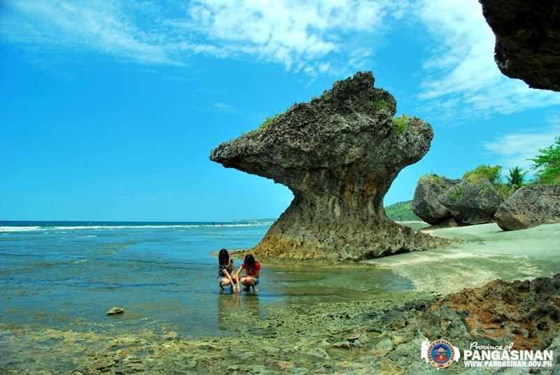
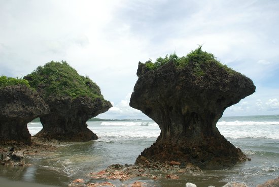
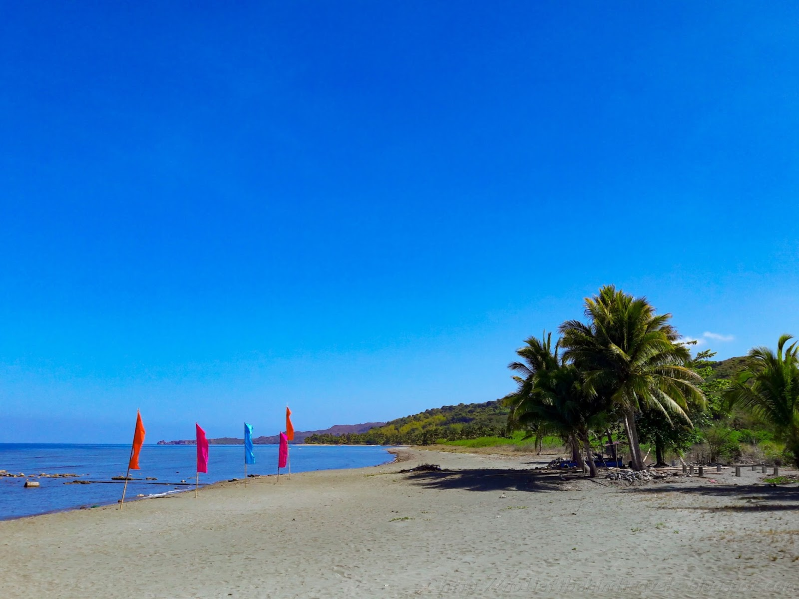
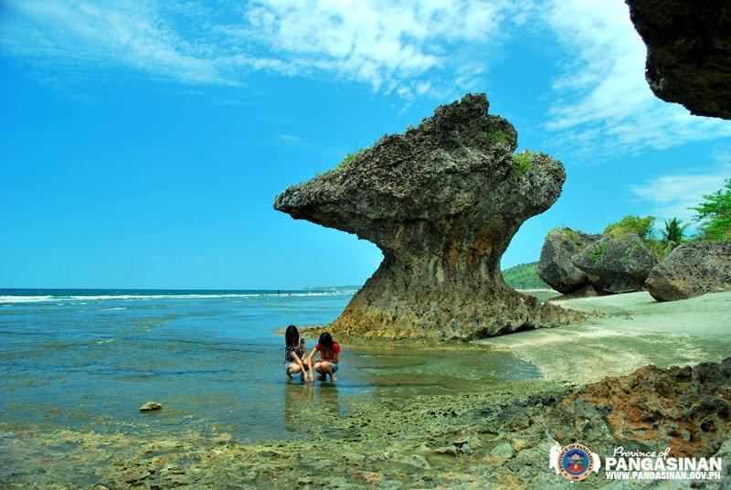
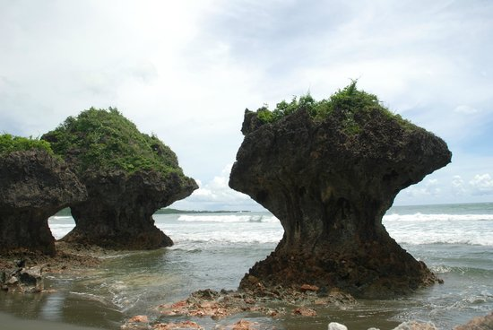
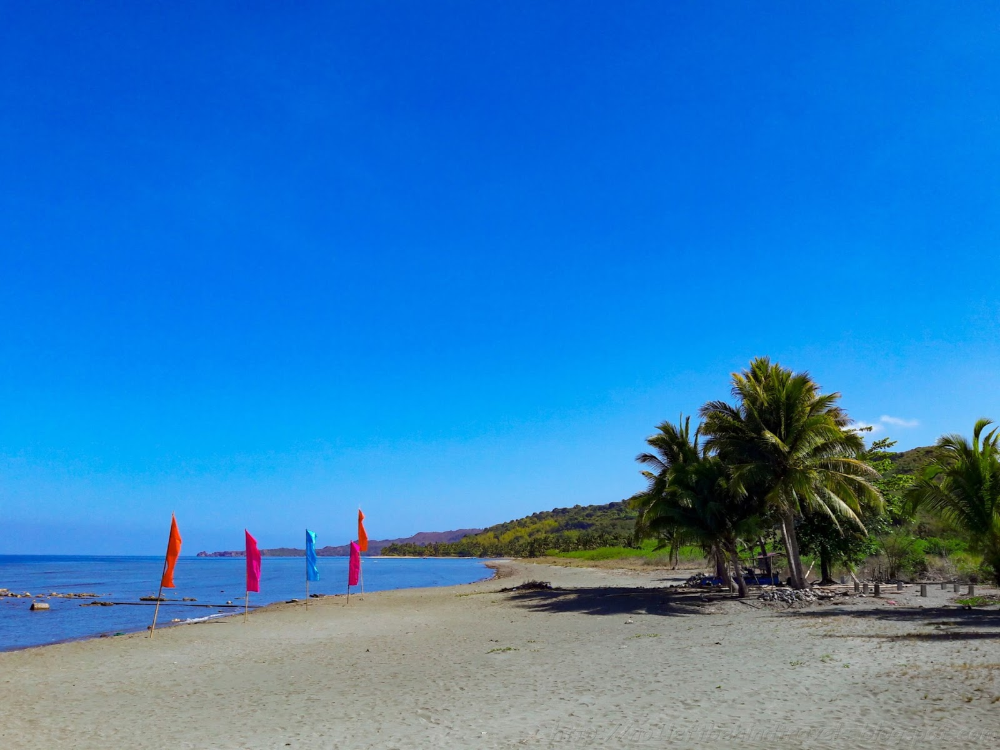

Agno, officially the Municipality of Agno, (Pangasinan: Baley na Agno; Ilocano: Ili ti Agno; Tagalog: Bayan ng Agno), is a 3rd class municipality in the province of Pangasinan, Philippines. According to the 2015 census, it has a population of 28,052 people. The town is characterized by rolling terrain and rainfed rice fields. Near the poblacion, or town plaza, the road passes along the Mabini river or (Balincaguing River), which drains into the South China Sea further west. The town plaza is home to a centuries-old Roman Catholic church, as well as one of the first congregations of the Philippine Independent Church. The town shares borders with the town of Bani to the north, the town of Mabini and Alaminos City to the east and with Burgos to the south. The town's main livelihood is fishing and agriculture, although a number of her sons and daughters work as doctors, physical therapist, nurses, engineers, computer programmers and accountants in numerous countries around the globe. On top of that, the town produces successful teachers, policemen and policewomen, and lawyers.

 




